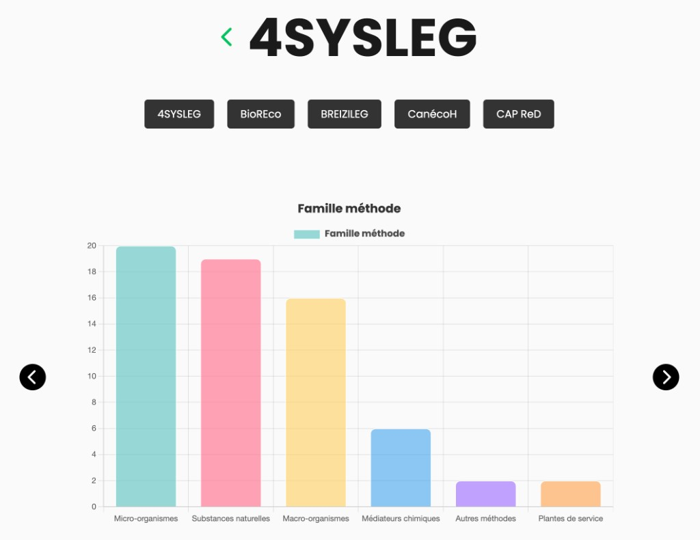
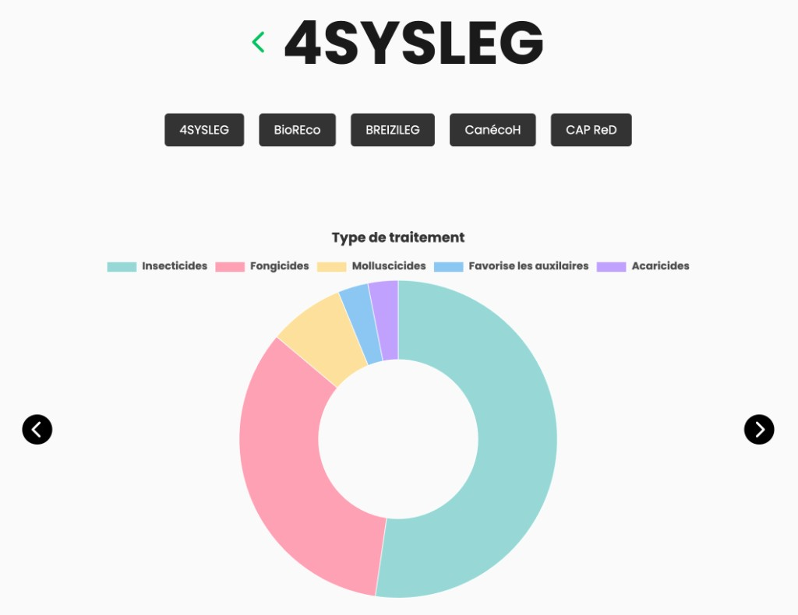
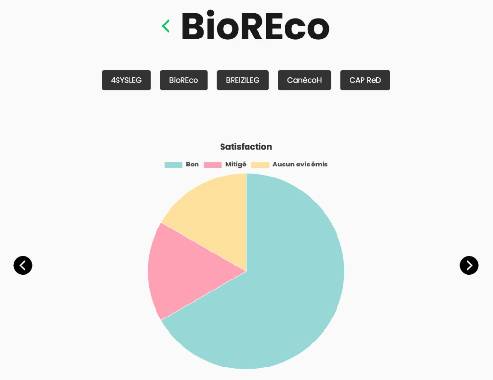

Biosphère – Visualisation des projets de biocontrôle
Projet universitaire réalisé en groupe à l’Université Gustave Eiffel : à partir d’une base de données et de plusieurs API, nous devions concevoir une interface de datavisualisation claire pour des décideurs travaillant sur les projets de biocontrôle.
Contexte & rôle dans l’équipe

Biosphère est une application web qui centralise différents projets de biocontrôle (4SYSLEG, BioREco, BREIZILEG, etc.). Le public cible : des personnes en charge de la décision, qui ont besoin de graphiques lisibles plutôt que de tables de données brutes. Au sein du groupe, j’ai travaillé sur la structure des données, l’intégration front et la cohérence visuelle des graphiques.
Exploration des données & API
Le point de départ n’était pas un design, mais une base de données complexe à analyser : champs hétérogènes, valeurs manquantes, typologies de projets différentes. Nous avons d’abord nettoyé et re‑structuré ces données, puis exploré plusieurs API complémentaires pour enrichir les informations (types de traitement, familles de méthodes, satisfaction des projets, etc.). Cette phase m’a permis de renforcer mes compétences en lecture de documentation d’API et en mise en forme de jeux de données pour la dataviz.
Visualiser les familles de méthodes

Une première série de graphiques met en avant les familles de méthodes utilisées dans chaque projet (micro‑organismes, substances naturelles, macro‑organismes, plantes de service, etc.). L’objectif était de permettre, en un coup d’œil, de comparer les grandes orientations des projets sans avoir à parcourir des tableaux interminables.
Répartition des types de traitement

Nous avons également conçu des diagrammes en anneau pour visualiser la répartition des types de traitement (insecticides, fongicides, molluscicides, méthodes favorisant les auxiliaires, etc.). Ces graphiques aident les décideurs à repérer rapidement les leviers majoritairement utilisés par chaque projet.
Perception & satisfaction des projets

Enfin, une autre visualisation met en avant la satisfaction liée aux projets (bon, mitigé, aucun avis émis). Ce volet plus “qualitatif” permet de relier les choix techniques (types de méthodes) à la perception globale des acteurs de terrain.
Stack & apprentissages
Même s’il s’agit d’un projet de début de 2ᵉ année, il a été important pour moi : il m’a appris à faire parler une base de données pour un usage réel (aider à la décision), et pas seulement à afficher des graphiques “jolis”. C’est aussi l’un de mes premiers cas concrets de datavisualisation appliquée à un sujet environnemental.